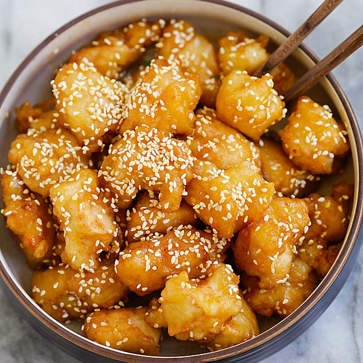

Honey Chicken

Descriptions
This is a Honey Chicken with a crispy coating that’s built to last! This recipe brings together a plethora of Asian cooking secrets for a Honey Chicken that stays crispy for hours, even after tossing in the honey sauce. The Chinese frying batter yields a crispy, puffy coating that’s light and not greasy, and requires no special ingredients or equipment!
Ingredients
- COLD soda water
- MORE cornflour/cornstarch than flour
- Flour
- Baking powder
- Chicken thighs
- Soy sauce
- Cornflour/cornstarch
- Glucose or corn syrup
Steps
- Marinate chicken – to add seasoning into the pieces and also to tenderise so each piece is ultra tender inside. This also gives us room for error in the frying time which is essential for ordinary folk who aren’t experienced fryers!
- Cornflour/cornstarch coating – provides an extra layer to seal in the juiciness of the chicken so it doesn’t soften the crispy coating. Method utilised in Sweet and Sour Pork
- Dip in batter – drop in a handful of chicken pieces, then coat in batter. Ready to fry!
- Fry 1 (3 minutes)- 3 minutes at 180C/350F until LIGHT golden. It will be unusually pale because of the cornflour in the batter (which doesn’t brown) but a touch is all it takes to know it’s SUPER crispy!! This step is to cook the chicken through. The chicken is already very crispy, but it won’t stay crispy for more than 10 to 15 minutes once coated in sauce with a single fry – hence the double fry in Step 7!
- COOL before double fry – another key tip to make crispiness-that-lasts! I do not know the science behind this, all I know is that double-frying cold chicken is crispier AND stays crispy for longer. Possibly the same reason why cold batter = crispier chicken?
- Double fry (90 sec) – fast becoming the worst kept frying secret, a quick double fry is THE secret to ultra crispy less greasy fried food (more examples: Sweet and Sour Pork, my mother’s Chicken Karaage and also a variation of this Honey Chicken recipe, Honey Prawns.) It also solves the batch-cooking cooling issue (ie first cooked goes cold) because you can crowd the pot for Fry #2 so all the chicken is reheated in one or at most, two quick batches.
- Drain on rack – we’ve gone to all this effort for crispy chicken, now is not the time to drain on paper towels, making the underside sweaty and soft! Elevate the chicken with a rack to drain it and ensure it stays crispy.